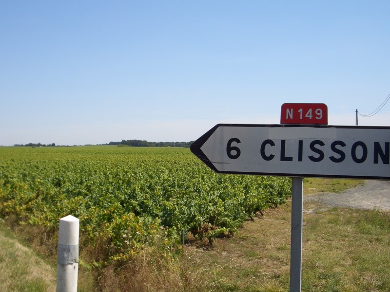
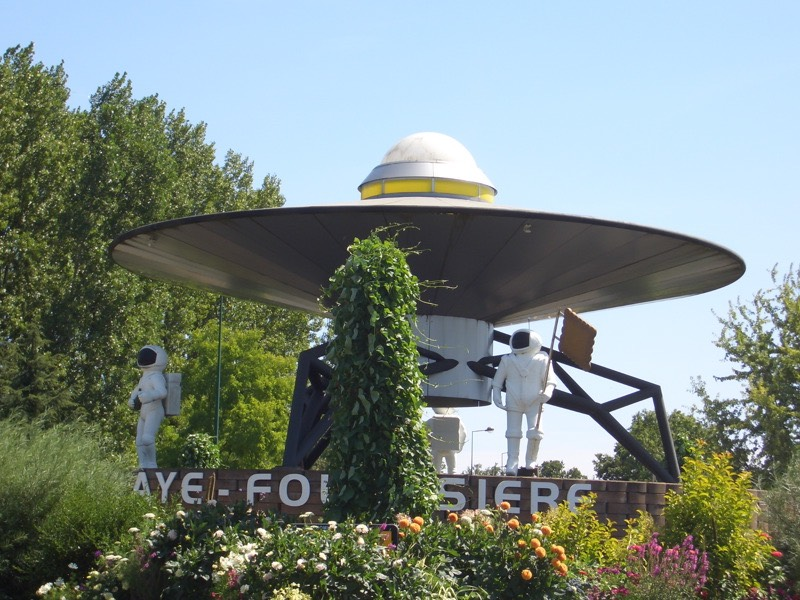
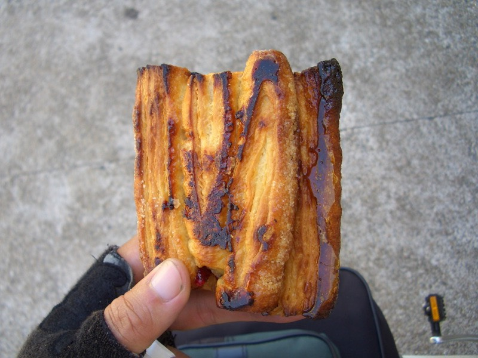
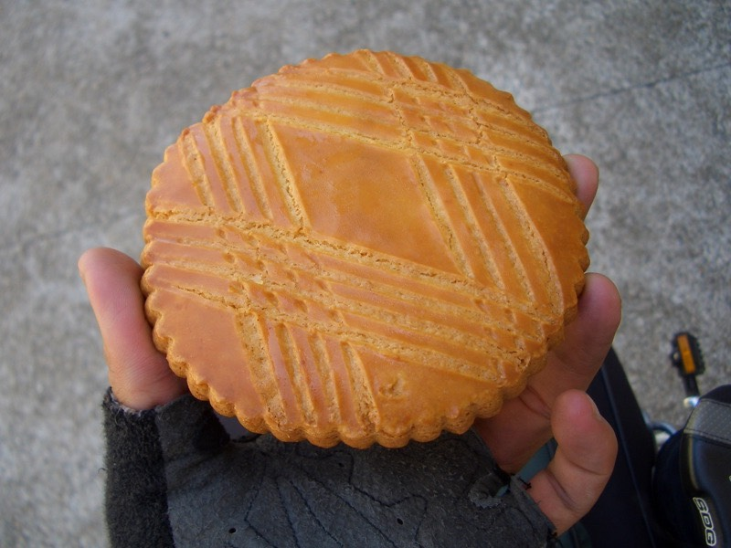
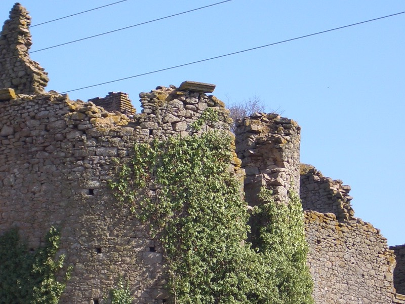
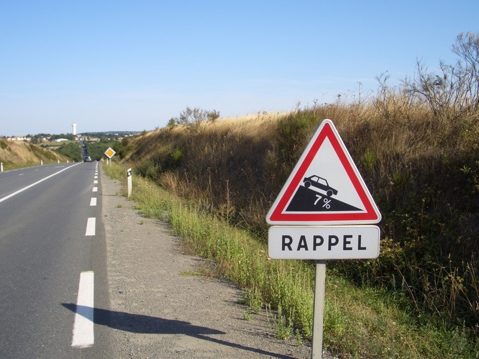
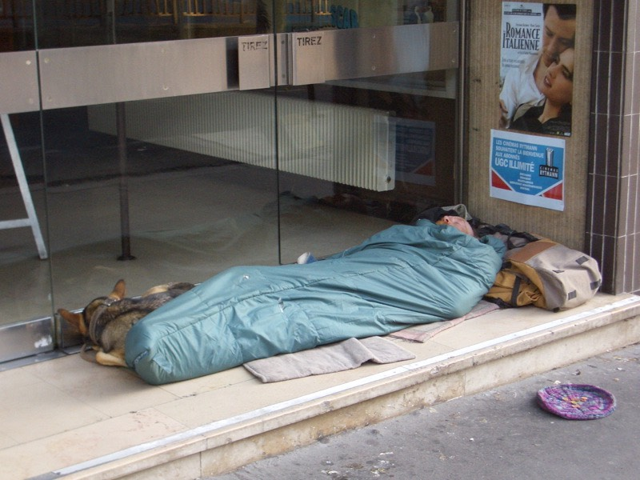
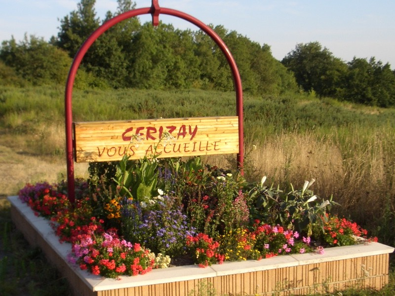
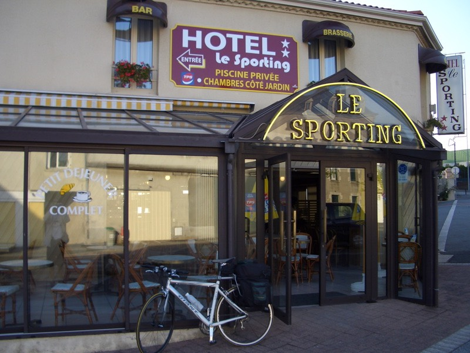
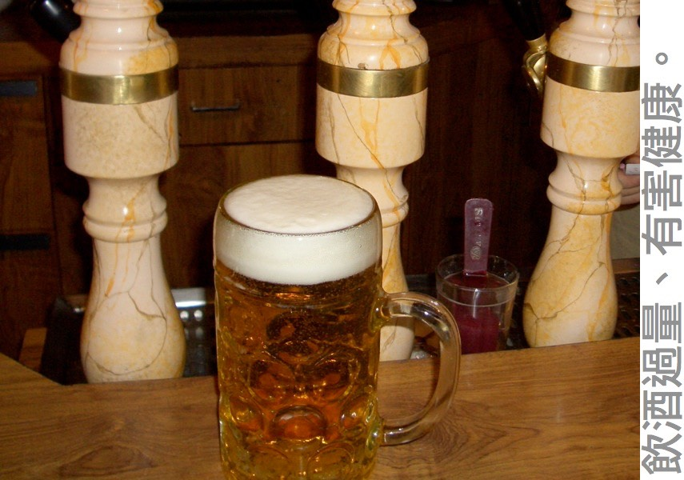

隔日，得想辦法從巴黎回南特，腳踏車跟行李全都在那邊，不回去怎麼行呢。
仗著自己還差兩個多月才滿25歲，用了優待票價買了TGV的火車，以300公里的急速奔回南特。
回旅館牽了腳踏車，拿出小叮噹的道具，『萬用高級潤滑油』噴了噴鏈條之後，
相當神奇的，FCR1的狀況恢復到的極致的地步，6歐元沒有白花，很有價值。
離開南特，就算是離開布列塔尼地區了，往南走吧，喝過了蘋果酒，該是喝葡萄酒的時候了。
早午餐就買了豪華雙份牛排KEBAB+薯條+一瓶Fanta解決，5歐元。
路邊的農作物，小麥田、玉蜀黍田、放牧地，全都消失了，相當一致的，只剩下葡萄園。

居然還發現降落地球的飛碟跟外星人.....

每天值得期待的用餐時間，包含了下午的麵包店小點心。
今天吃裡面夾著不知名果醬的派酥餅乾，1.4歐元。

和大片圓圓的烤餅乾，0.9歐元。

不完美，也很美。

最喜歡的交通號誌，第一名是『單車專用道』，第二名就是這個『斜坡注意！』

沿著N149道路騎了100多公里，只要看到有小鎮的城市，就繞去旅館看一下價位。
心中沒有預設目的地是哪個城市，只要有便宜旅館，就住下吧，不然，睡路邊也無妨，天氣正熱著呢。

在一個叫『CERIZAY』的小鎮裡，找到一家30歐元的房間，好吧，就是你了。

若住在單純的旅館，得出去找東西吃，要是住餐廳附設的旅館，則下樓就能填飽肚子。
今天住的是酒吧附設的旅館，除了賣酒，還是賣酒。

啤酒算是液體麵包，晚餐就喝杯8歐元的大杯啤酒，老闆贈送兩盤價值0.5歐元的花生米。

騎了一百公里，以平均里程來講，算是少的，但也找到了便宜的旅館。
在法國待了二十幾天，如果旅館的價格低於20歐元，就是媽祖顯靈。
20~25歐元，算是不可多得的便宜好旅館，26~30是一般可以接受的價格，
31~35正常價格，開始有點心痛，36~40，要陷入思考是不是該入住，
40~up，住的話，很明顯的，今天就透支了.....有錢就住吧，不然有種一點去睡路邊。
雖然當初的規劃是一天40歐元的花費，但幾乎每天都超支，因為有信用卡可以刷的緣故，
超支也沒那麼樣的心痛，只要身上留有一部份的現金也就算了。
早知道換旅行支票這麼樣的麻煩，當初一定不會買旅行支票，而直接買歐元現金。
有本事就來偷我、搶我，拿著旅支，到處都不給換，搞得自己跟呆子一樣，何苦呢？
不剩酒力的下場，就是醉。